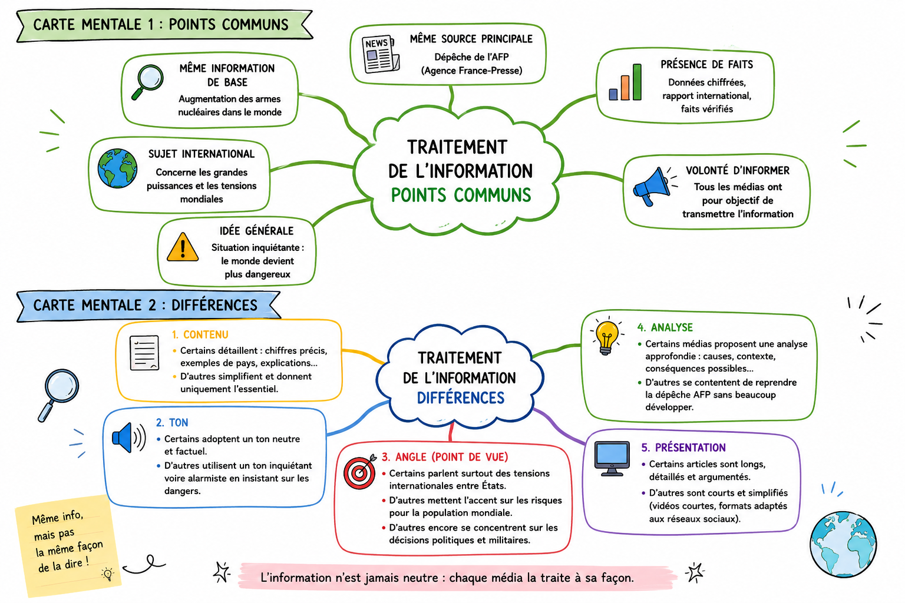

| Source | Type de site | Auteur / statut | Angle / arguments | Intention | Lien |
|---|---|---|---|---|---|
| SciencesPo | Site institutionnel | Institution ℹ SciencesPo | Données chiffrées et analyse historique (faits vérifiés) | Diffuser des connaissances | Voir |
| France24 | Réseau social (vidéo) | Journalistes ℹ Rédaction France24 | Présentation de faits avec explication simplifiée | Informer rapidement | Voir |
| Le Monde | Site d’information | Expert ℹ Joseph Cirincione | Analyse politique avec arguments et opinion | Influencer et faire réfléchir | Voir |
| Euronews | Site d’information | Journalistes ℹ AFP / Euronews | Faits et données chiffrées | Informer | Voir |
| France24 | Vidéo | Journalistes ℹ France24 | Résumé des faits avec simplification | Informer | Voir |
